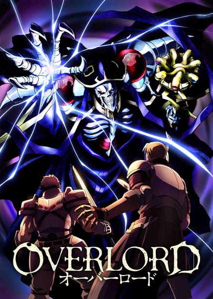
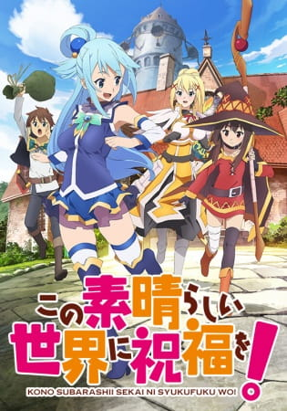
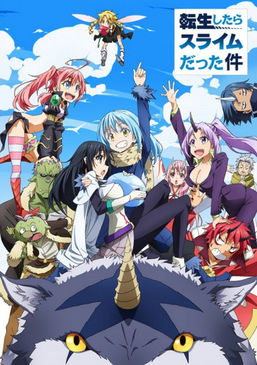

| 1 |
 |
7.92 |
Pada tahun 2138, game virtual reality berkembang dengan pesat. Sebuah game online populer, Yggdrasil diam-diam menutup gamenya. Namun, satu pemain bernama Momonga memutuskan untuk tidak log out. Momonga kemudian berubah menjadi sesosok skeleton “penyihir yang paling kuat”. Dunia terus berubah, dengan karakter non-pemain (NPC) mulai emosi. Tak memiliki orang tua, teman, atau tempat dalam masyarakat, pemuda bernama Momonga ini pun kemudian berusaha untuk mengambil alih dunia game yang baru ini. |
| 2 |
 |
7.97 |
Dalam peperangan, seorang gadis kecil berdiri di barisan depan. Gadis itu memiliki rambut berwarna pirang, bermata biru dan berkulit putih bersih. Gadis yang memerintah pasukannya dengan suara cadel seperti anak-anak itu bernama Tanya Degurechaff. Sebenarnya dia adalah salah satu pegawai kantoran paling elit di Jepang yang dilahirkan kembali sebagai seorang gadis kecil oleh makhluk misterius yang mengaku sebagai Tuhan. Gadis kecil yang menganggap efisiensi dan pekerjaan di atas segalanya ini membuatnya menjadi makhluk paling berbahaya di antara para penyihir dan tentara kerajaan. |
| 3 |
 |
8.24 |
Dalam perjalanan pulang dari supermarket, Natsuki Subaru tiba-tiba mendapati dirinya berpindah ke sebuah dunia fantasi Tanpa mengetahui kenapa ia bisa berada di sana dan tanpa mengetahui siapa yang memindahkan dirinya.
Di dunia barunya tersebut, Subaru berteman dengan seorang gadis setengah elf berambut perak yang memperkenalkan dirinya sebagai Satella.
Saat dia dan gadis tersebut terbunuh secara misterius terbunuh, Subaru terbangun dan menyadari bahwa dirinya mempunyai kemampuan “Return by Death” yang memungkinkan dirinya kembali ke waktu sebelum ia meninggal dunia. |
| 4 |
 |
8.12 |
Cerita bermula ketika Satou Kazuma, seorang pemuda yang merupakan hikikomori, meninggal dunia akibat kejadian yang sangat konyol dan memalukan.
Sebelum masuk dunia afterlife, Kazuma bertemu dengan seorang Dewi bernama Aqua.
Dewi cantik tersebut menawarkan Kazuma bereinkarnasi ke sebuah dunia fantasi bergenre MMORPG dimana Kazuma bisa berpetualang selayaknya hero dalam game.
Aqua juga menawarkan beberapa ultima godly weapon pada Kazuma untuk dibawa ke dunia selanjutnya, namun Kazuma malah memilih Aqua untuk dibawa ke dunia selanjutnya.
Meskipun protes keras, Aqua dan Kazuma akhirnya sukses dikirim ke dunia MMORPG.
Dari sinilah cerita KonoSuba bergulir. |
| 5 |
 |
8.12 |
Terbunuh saat menyelamatkan orang asing dari kecelakaan di jalan, seorang NEET berumur 34 tahun bereinkarnasi ke dunia sihir sebagai Rudeus Greyrat, bayi yang baru lahir. Dengan pengetahuan, pengalaman, dan penyesalan dari kehidupan sebelumnya, Rudeus berusaha menjalani kehidupan barunya dengan lebih baik dan tak ingin mengulangi kesalahan di masa lalu. |
| 6 |
 |
8.14 |
Mikami Satoru, lelaki berusia tiga puluh tujuh tahun yang terjebak dalam pekerjaan membosankan dan tak senang dengan kehidupan biasanya.
Tapi, setelah ditikam oleh seorang perampok, ia terbangun di dunia fantasi …, sebagai slime.
Saat ia menyesuaikan diri dengan keadaannya, hubungannya dengan monster lain memicu serangkaian peristiwa yang akan mengubah dunianya! |